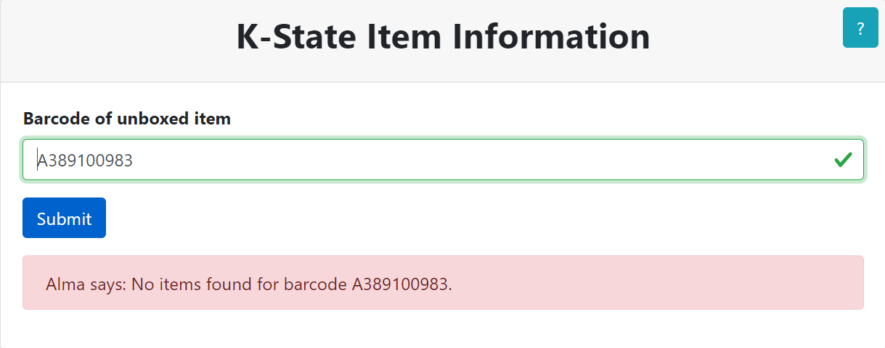

Esta aplicación facilita el flujo de trabajo de desempacar al proporcionarle información importante. Le proporciona el Título físico, Número de clasificación, Descripción, Código de barras, Tipo de proceso, Nota de Procesamiento y su Destino final. La aplicación está codificada por colores para proporcionar una respuesta visual estimulada, así que revise la tabla de códigos de color a continuación. Después de escanear su primer código de barras, podrá escanear su próximo código de barras desde la página de resultados. Si tiene alguna pregunta, no dude en preguntar al personal de la biblioteca.
El primer formulario le pide que escanee el código de barras. Estos códigos de barras se pueden escanear con el escáner de código de barras o ingresandolos. Cuando haya ubicado el código de barras en la pieza física, ingrese dichos códigos de forma en el formulario:
Si el código de barras no existen dentro del sistema, recibirá un error. Verifique la pieza física para otros códigos de barras y si todos devuelven el siguiente error, coloque el artículo físico en el Estante de problema:

El siguiente formulario mostrará la información del artículo físico desempaquetado. El Destino se mostrará en la parte superior de la página seguido de Título, Número de clasificación, Descripción, Códigos de barras, Tipo de proceso, Nota de Procesamiento, y el Destino nuevamente. El color de fondo del formulario está relacionado con el destino del artículo físico. Revise la tabla de códigos de color a continuación. Si la fila Tipo de proceso tiene un color de fondo de rojo coloque el artículo físico en el Estante de problema, ignorando el destino indicado. Si la fila Nota de cumplimiento tiene un color de fondo rojo, coloque el artículo físico en el Estante de problema, ignorando El destino indicado:
Cuando esté listo, puede escanear los siguientes códigos de barras utilizando el formulario en la parte inferior de la página:

| Destino | Descripción |
|---|---|
| Coloque el artículo en el carrito etiquetadoPara HALE | |
 |
a. Coloque el artículo en el carrito etiquetado ANEXO |
 |
Coloque el artículo en el carrito etiquetado Para Remover |
| Lleve el artículo al estante etiquetado Estante de problema | |
 |
Lleve el artículo al estante etiquetado Estante de problema |
 |
Lleve el artículo al estante etiquetado Estante de problema |